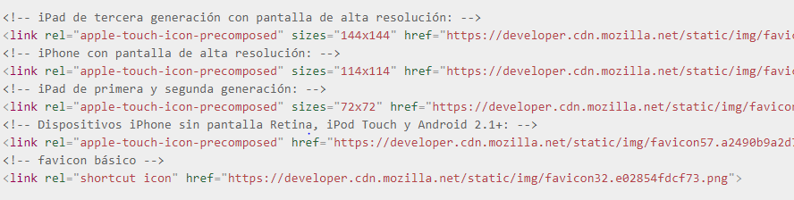

Un favicon es el icono pequeño que aparece en la pestaña en la que nos encontremos, para agregarlo tenemos que crear el favicon, para esto vamos a usar la pagina Favicon-generator aqui se tendremos dos opciones generar un solo favicon del tamaño de 16x16 o generar favicons para web, microsoft, ios, android, si escogemos esta opcion la pagina nos generara varios favicons y nos pondra los links para agegarlo a nuestro head en el html, deberemos agregar todos los favicons disponibles.
En este ejemplo veremos la explicacion de para que sirve cada favicon
